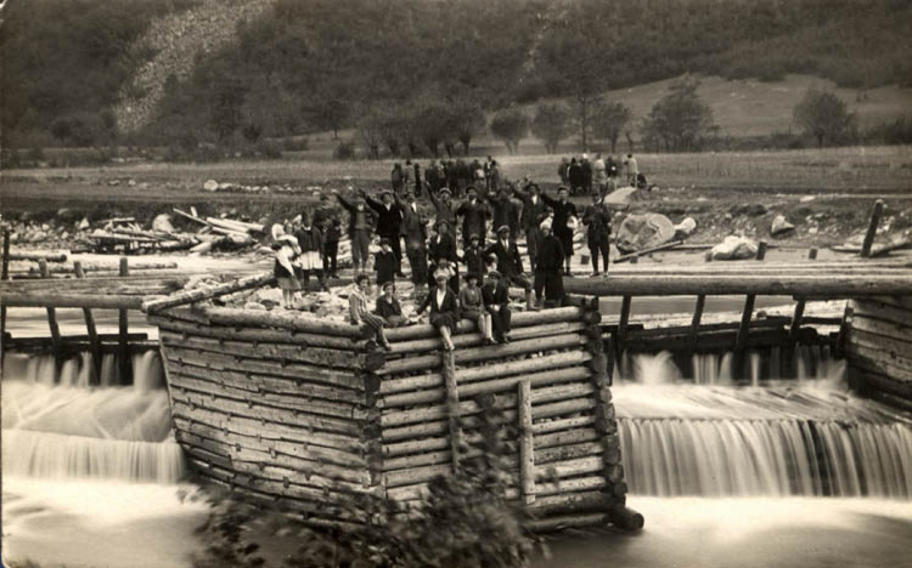
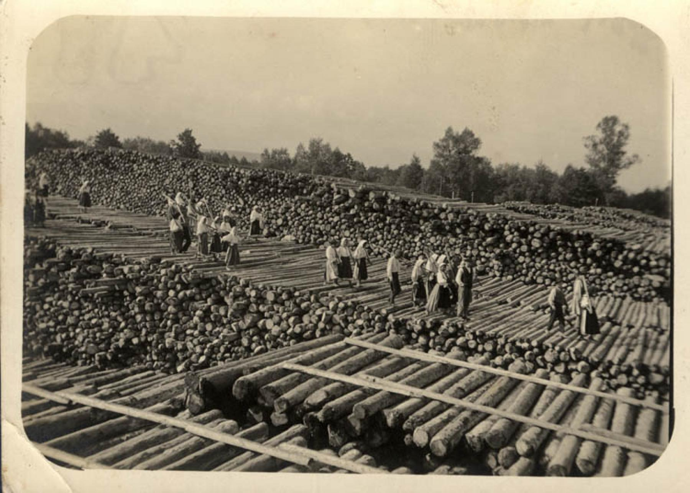
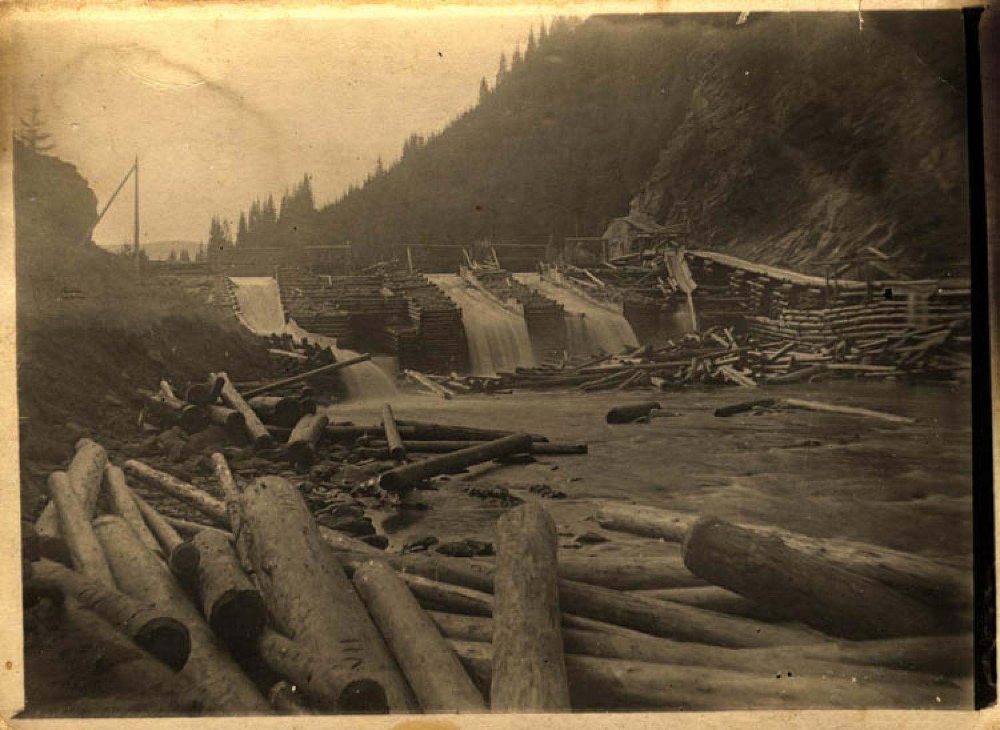

Istoric
Este foarte important să cunoaștem istoria zonei pentru a putea observa progresul și efortul depus de-a lungul timpului de către iubitorii de natură și reușita acestora în ocrotirea și conservarea valorilor naturale din Parcul Național Retezat.Informatii oficiale - www.retezat.ro
ADMINISTRATIA CASEI REGALE - 1922
- Înainte de Reforma Agrară din 1922, pe o parte din Masivul Retezat exista un fond de vânătoare al Casei Majestăţii Sale Regele, administrat de Direcţia Vânătorilor Regale, aflat în proprietatea indiviză a Statului Român şi a familiei grofului Kendeffy. De asemenea, începând cu 1880, în zonă s-au făcut exploatări forestiere (tăieri rase la molid), cu italieni aduși de proprietarii pădurilor, familia Kendeffy, de la firma Pecal, din provincia Udine. Plutăritul liber se practica pe Lăpuşnicul Mare, Lăpuşnicul Mic şi ulterior pe Râul Şes. Baraje pentru acumularea apei (zătoni) existau la Rotunda, Drăgşanu, Branu şi pe Râul Şes.

La grebla
- La Brazi exista o „greblă” pentru prinderea lemnului, iar la Clopotiva o fabrică de cherestea. Reîmpăduririle au fost făcute, prin grija proprietarului, cu material de împădurit de la pepinierele din Gura Zlata, Gura Apelor şi Lunca Berhinei. Tot la începutul secolului se experimenteză pentru prima oară păşunatul cu vite mari, începând cu păşunea Slăvei.

Bulevardul lemnului
REFORMA AGRARA - 1923
- În 1923 cea mai mare parte a golului alpin se atribuie în mod definitiv, prin Reforma Agrară, în urma exproprierii, unor sate/comune, cu drept de folosire pentru păşunat, ulterior impunându-se și unele restricții, stabilite la înfiinţarea Parcului Național Retezat în 1935. Administrator al acestor păşuni a fost numit Consilieratul Agricol al Judeţului Hunedoara, în baza instrucţiunilor primite de la Direcţia Islazurilor Pendinte din Ministerul Agriculturii.

Zatoni pe lapusnic
CEDARE SI INCLUZIUNE - 1927
- În 1927, prin Procesul verbal din 17 iulie, Consilieratul Agricol al Judeţului Hunedoara predă Muzeului Botanic Cluj aproximativ 1500-1800 iugăre în zona Aradeş, Zănoguţa pentru includere în Parcul Naţional Retezat. Nu se cunoaşte localizarea exactă a acestei suprafeţe.
C.A.P.S - 1931
- Din 1931, Casa Autonomă a Pădurilor Statului (CAPS) a preluat în administrare fondul forestier, până atunci proprietate indiviză a Statului Român şi a familiei Kendeffy. Înainte de înfiinţarea Parcului Naţional Retezat (1935), zona era rezervaţie de vânătoare pentru capre negre, aparţinând Casei Majestăţii Sale Regele, fiind administrat de Direcţia Vânătorilor Regale, „care şi-a luat angajamentul celei mai mari ocrotiri.”
INFIINTARE - 1935
- În anul 1935 a fost înfiinţat Parcul Național Retezat la inițiativa profesorului Alexandru Borza, fondatorul Grădinii Botanice din Cluj-Napoca, și a savantului de renume mondial Emil Racoviță. La înfiinţare, Parcul Naţional Retezat se întindea pe o suprafaţă de aproximativ 100 km². Înainte de înființarea parcului, la începutul secolulului XX exista tendinţa de a reduce efectivele de ovine, de cca. 30.000 exemplare anual, care păşunau în zona alpină. Păşunatul cu ovine era interzis în zona lacurilor, încercându-se astfel să se protejeze zonele preferate de capra neagră.
- Ulterior, pe suprafața declarată Parc Naţional păşunatul a fost permis doar „pentru vitele cornute şi caii proprietarilor acelor teritorii, cu excluderea totală a oilor şi excluzând orice introducere cu chirie a vitelor aparţinând altor comune decât cele de la poalele Retezatului, împroprietărite în Retezat, ori altor persoane, decât proprietarilor actuali”, aşa cum se arată în Procesul verbal de constituire a Parcului.
- Turismul s-a practicat în Masivul Retezat încă din anii 30, după cum o dovedeşte şi harta elaborată de Touring-Clubul României în anul 1936, pe care este figurată Casa Pietrele, aflată în proprietatea Clubului şi având rol de cabană turistică.
ADMINISTRATIE PROPRIE - 1999
- Începând din anul 1999, Parcul Național Retezat are administrație proprie, R.N.P. ROMSILVA - Administrația Parcului Național Retezat RA, unitate cu personalitate juridică în cadrul Regia Națională a Pădurilor-ROMSILVA.
CONSERVARE (2004-2007)
- Din septembrie 2004, Parcul Național Retezat a devenit membru al rețelei PAN Parks. Ulterior, Parcul Național Retezat devine membru al European Wilderness Network (printre primele zone certificate ca fiind sălbatice din Europa). De atunci, a fost auditat de către European Wilderness Network în fiecare an între 2006 și 2010, certificarea fiind reînnoită în 2017.
- Din anul 2007, este protejat ca propunere de situri pentru rețeaua ecologică europeană Natura 2000, în vederea conservării habitatelor naturale și a speciilor de plante și animale sălbatice de interes comunitar (ROSCI0217 Retezat), cât și protejării și conservării speciilor avifaunistice (ROSPA0084 Munții Retezat).